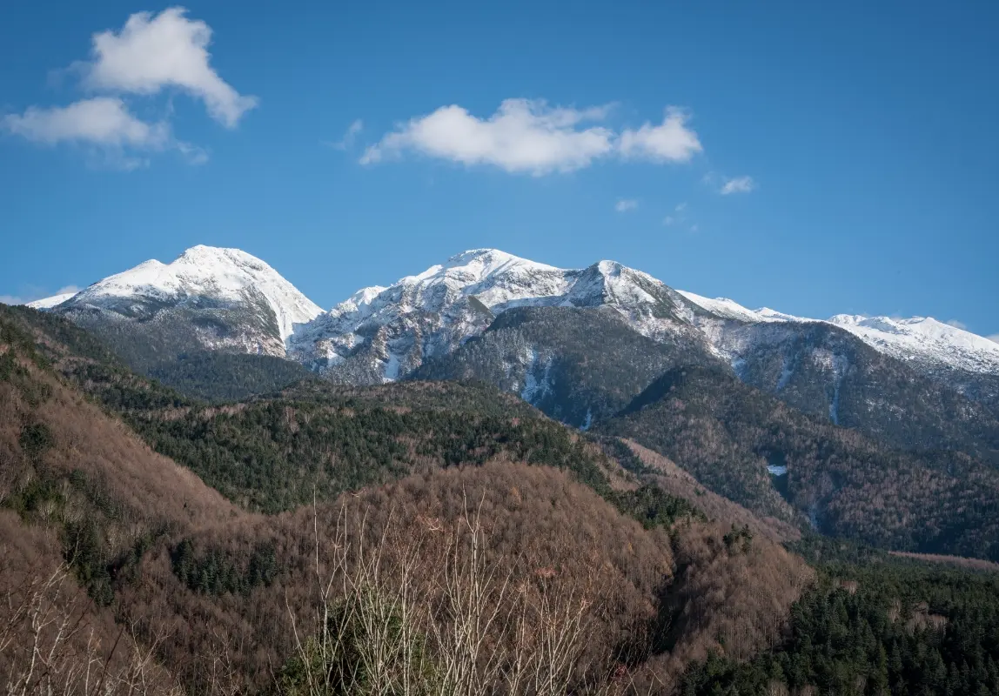
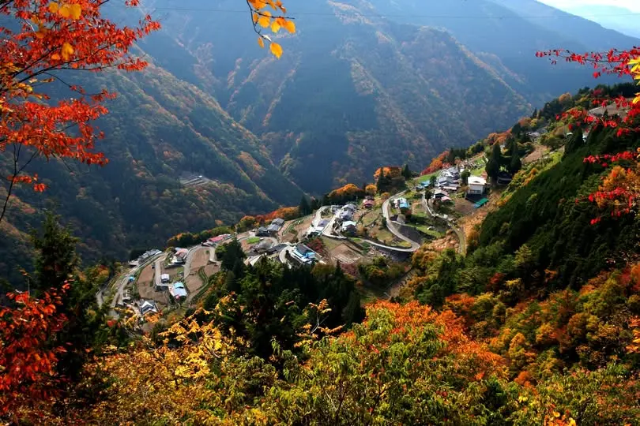
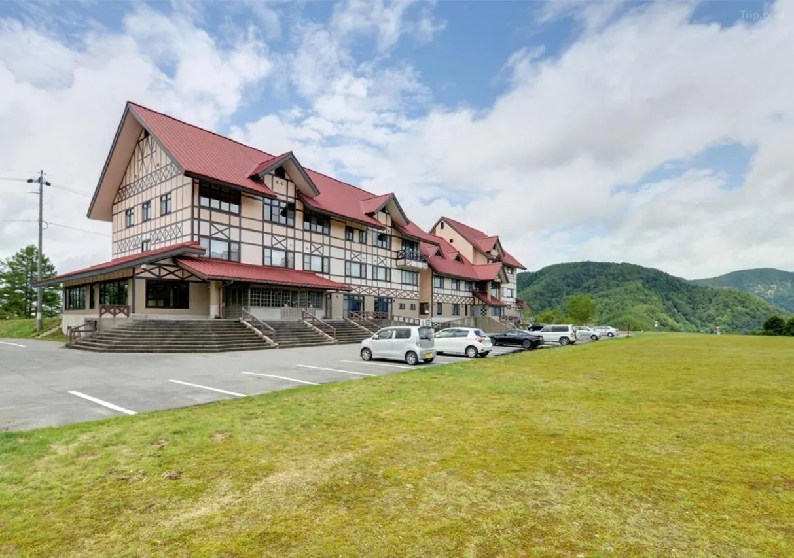
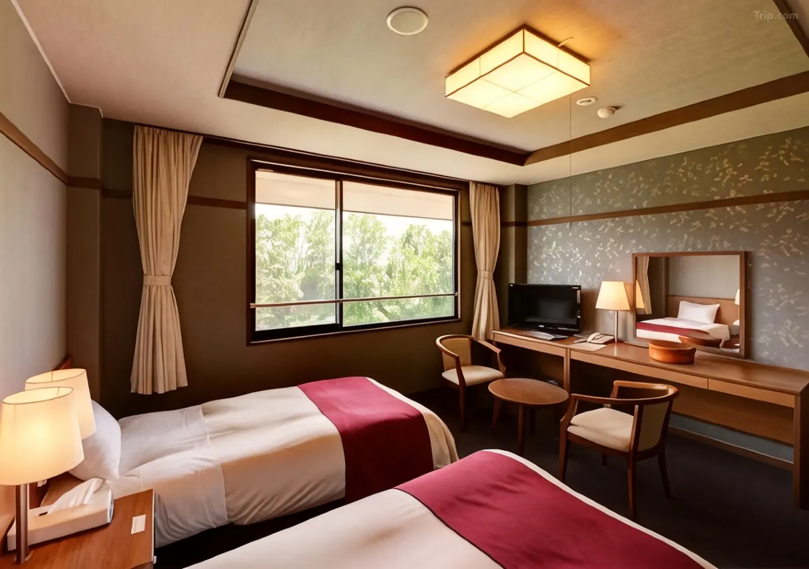
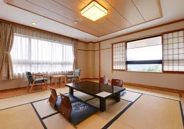
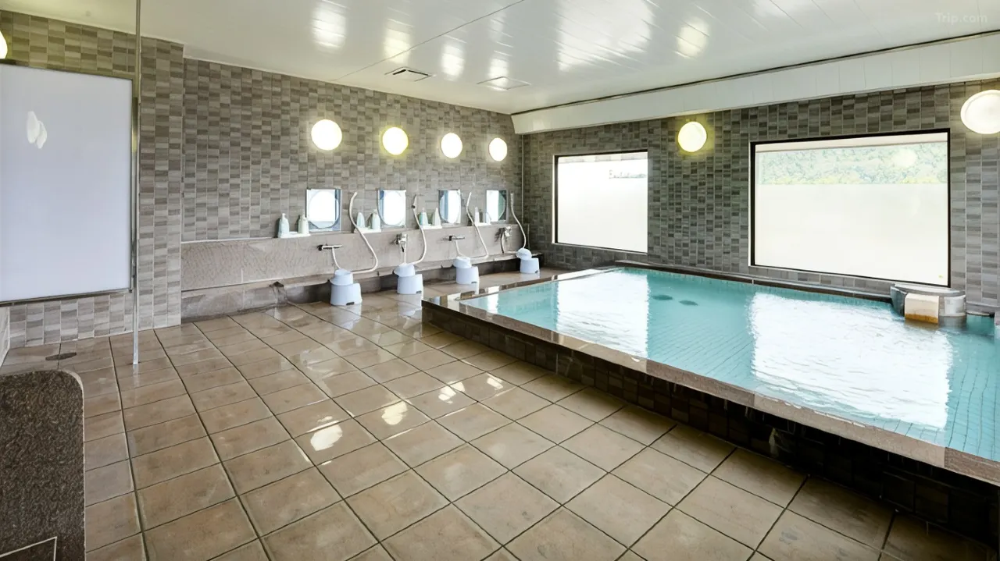
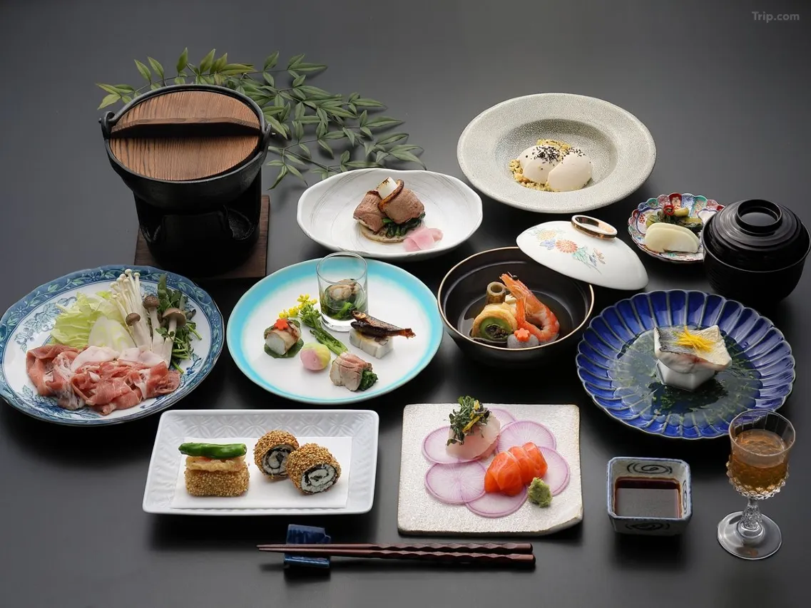
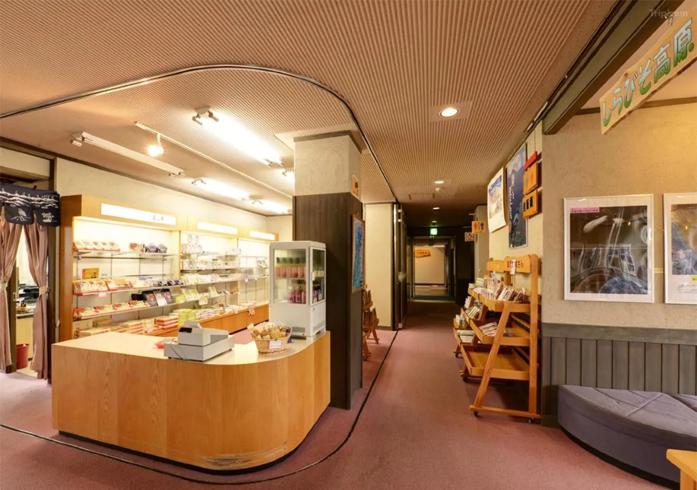

Hayao Miyazaki has explained, in his own words, where Spirited Away began. He was watching television and saw a Shinto ritual from the mountains of Nagano — a winter festival in which the people of a remote village invite every god in Japan to come to their community and bathe in boiling water, to cleanse themselves for the new year. He found the idea fascinating. He thought: what would a bathhouse for gods look like? What would it mean to work in one? The anime that followed — the highest-grossing movie in Japanese history, the studio's most enduring work — grew from that single image of gods descending on a mountain village to bathe.
The festival is called the Shimotsuki Matsuri. It is held each December in the Toyama-go area of southern Nagano Prefecture, in the mountains that rise above Iida City toward the Southern Alps. Hotel Amanogawa — 天の川, "Milky Way" — sits at 1,918 meters in those same mountains, on the plateau called Shirabiso Highlands, 20 to 30 minutes by car from the valley where the gods come down each winter to wash. On clear nights, which are frequent at this elevation in the dry mountain air, the Milky Way is visible without magnification from the hotel's terrace. The hotel's name refers directly to this: the Amanogawa, the "Heavenly River," is the Japanese word for the Milky Way. You are sleeping in the place that gave Miyazaki the world of the anime. Above you, the galaxy turns.
The Plateau and Its Sky

Shirabiso Highlands occupies a ridgeline in the Southern Alps at 1,900 meters elevation, inside the Southern Alps UNESCO Ecopark — an area designated by UNESCO for its exceptional biodiversity, geology, and landscape integrity. From the plateau, the view extends across the full width of the Japanese Alps: the peaks of the Southern Alps rise immediately to the east — Hijiri, Tekari, Akaishi, Arakawa — their summits at 3,000 meters, their ridgelines close enough that guests describe feeling they could reach them. The Central and Northern Alps appear on the horizon to the west and northwest. The view is a 360-degree alpine panorama that no road-accessible point at lower elevation in this part of Japan can reproduce.
The name of the hotel — Amanogawa, "Milky Way" or "Heavenly River" — describes the primary experience of the plateau at night. At 1,918 meters, with no significant light sources within driving distance and air that the elevation keeps consistently dry, the sky above Shirabiso delivers a Milky Way that is visible to the naked eye on clear nights throughout the year. The hotel holds guided stargazing sessions in the five days before and after each new moon, and offers binoculars for rental; guests can lay observation sheets on the terrace outside and watch meteor showers on the calendar dates the hotel posts on its activity page. The star most commonly encountered here by guests who have never seen it properly from ground level is simply the Milky Way itself — the galaxy's central band, thick and structured, crossing from horizon to horizon in a way that city-dwelling guests consistently describe as unlike anything they expected.
The Shimotsuki Matsuri: Where the Anime Began

The Shimotsuki Matsuri is held at nine Shinto shrines in the Toyama-go area of Iida City each December, its central ceremony a thousand years old without documented interruption. The ritual's core is an invitation: participants call out the names of gods from across Japan, inviting them to descend and cleanse themselves in the hot water boiling in the cauldron at the shrine's center. Masked figures representing major deities circle the fire, drink sake, and dance. The tengu — the long-nosed spirit of the mountains — appears late in the night and flings boiling water over the crowd with his bare hands, which are understood to be impervious because the water belongs to the gods. The ceremony runs through the night in the bitter cold of December, beginning in the afternoon and reaching its most intense moments after midnight.
Miyazaki's connection to this area goes beyond the television image that sparked the anime. He stayed personally in Shimoguri no Sato — the floating village at 1,200 meters that clings to the 30-degree slopes above the Toyama River valley — and later produced the short anime Chuuzumou, set there. The Go Nagano official tourism site confirms the Shimotsuki Matsuri directly as a Spirited Away inspiration. The hotel is located approximately 20 to 30 minutes by car from the Toyama-go valley where the festivals are held, in the higher elevation of the same mountain range. For guests visiting in December, the combination of the Shimotsuki Matsuri in the evening and the Milky Way above the hotel's terrace after midnight is the most complete available immersion in the geography that made the anime.
Mt. Oike Meteor Crater: The Other Anime Connection
Two and a half kilometers from Hotel Amanogawa, at the same 1,900-meter elevation on the Shirabiso ridge, sits the Oike Daimyojin Shrine — a small Shinto sanctuary built at the center of the Mt. Oike meteor impact crater. The crater is geological: a circular depression formed by a meteorite impact, now occupied by a still, dark lake and its shrine. A Tripadvisor reviewer noted the connection explicitly: the coming-of-age anime film Your Name — in which a comet impact is the anime's central catastrophe — is set in Gifu Prefecture, but the reviewer notes the meteorite episode may have drawn inspiration from Nagano's Oike crater. This connection is not confirmed in the same way as the Shimotsuki Matsuri's relationship to Spirited Away, but it adds a second layer of anime-adjacent geography to the plateau: within walking distance of the hotel, there is a lake inside a crater, surrounded by forest, attended by a shrine. The quality of the place — small, quiet, hidden at altitude — does not require the anime connection to be significant.
Rooms: Japanese and Western, Mountains on Every Side
The hotel has 24 rooms across two main types. The Western twin rooms occupy the third floor, each with two single beds, en-suite bathroom, Wi-Fi, and the most elevated views the building offers — the Southern Alps visible from the window, the air noticeably colder at night than at lower elevations. The Japanese-style tatami rooms span the second and third floors, with capacities of up to five guests per room in the 10-tatami and 12-tatami configurations. Corner rooms in the tatami category have windows on two sides, admitting different mountain aspects simultaneously — Central Alps from one wall, Southern Alps from another. Rooms without private bath share communal facilities; the large communal bath is filled from local mountain spring water sourced from the Odaka range, heated to bathing temperature. Yukata are provided for all guests. There are no refrigerators in rooms; windows do not open (the natural environment at this altitude brings insects that the sealed rooms prevent). The lack of these minor conveniences reflects the basic logic of the hotel's position: it is a mountain facility at nearly 2,000 meters, not a city hotel that happens to have a good view.
The Bath and the Communal Large Bath
The hotel's large communal bath (大浴場) is filled with water sourced from the springs of the Odaka mountain range — local mountain water, heated, not a hot spring in the onsen sense. The distinction matters: Shirabiso Highlands does not have a geothermal spring, and the bath is not mineral onsen water. What it offers instead is a spacious, clean bathing facility at 1,918 meters elevation, with bathing hours from 15:00 to 22:00 in the evening and 05:00 to 08:00 in the morning — the early morning session, at dawn on the plateau, being the one guests most frequently mention in reviews. Day-trip visitors may use the bath between 10:00 and 14:00 for a fee of ¥700 for adults. The bath is equipped with shampoo, conditioner, and body soap; towels are available in rooms for hotel guests.
Dining: Local Ingredients from the Mountain Region
Dinner and breakfast are served in the hotel's restaurant, which faces the mountain panorama. The dinner menu is built around local Nagano and Ina Valley ingredients — mountain vegetables, river fish, game from the surrounding forest, and produce from the agricultural communities of Iida and the Toyama-go valley below. Guest reviews consistently note that the cuisine is genuinely local rather than standardized: dishes reflect what the season and the surrounding land are producing. Breakfast is a Japanese-style meal. The hotel participates in the broader Ina Valley food culture, which includes some of Japan's more unusual rural traditions — guests who explore the area during a longer visit will encounter local specialties that are not available in any other part of Japan. The on-site shop sells local products including shimo-guri potato crackers, wasabi arare, and dried persimmon — items sourced from the communities in the valleys below.
Practical Information
- Check-in: 15:00 Check-out: 10:00
- Meals: Dinner and breakfast included in most plans, from ¥15,400/person · Local mountain and Ina Valley ingredients
- Bath: Large communal bath (mountain spring water, not hot spring) · 15:00–22:00 / 05:00–08:00 · Day visitors: 10:00–14:00, ¥700 adults
- Stargazing: Guided sessions around each new moon · Binoculars available for rental · Meteor shower observation plan packages available
- Shimotsuki Matsuri: December, in the Toyama-go valley ~20–30 min by car · Guided festival tours available (Snow Monkey Resorts and local operators)
- By car from Iida IC: ~1h 15min on mountain roads · Mountain roads after dark are dangerous — arrive before sunset
- By bus to Iida: From Shinjuku Bus Terminal (~4h 15min) or Nagoya (~2h 30min) → Iida Station → taxi/car required (~1h 15min, no public transport to hotel)
- Seasonal closure: Closed December–March (winter) · Open approximately April–November
- Best seasons: Summer (cool highland, Milky Way, Perseid meteor shower Aug 10–15) · Autumn (foliage + clear skies) · December for Shimotsuki Matsuri (hotel closed; base in Iida city)
- Note: No refrigerators in rooms · Windows do not open · Arrive before dark — mountain roads are steep and narrow
Getting There: The Road Up the Mountain
Hotel Amanogawa has no public transport connection. The nearest point accessible by bus or train is Iida Station in Iida City, from which the hotel is approximately one hour and fifteen minutes by car via mountain roads. From Tokyo, the most practical route is the highway bus from Shinjuku Bus Terminal to Iida Station (approximately 4 hours 15 minutes), then a rental car or taxi for the final ascent. From Nagoya, the bus takes approximately 2 hours 30 minutes to Iida, and the drive from Iida IC on the Chuo Expressway to Shirabiso takes the same one hour and fifteen minutes on the same mountain roads. Note that Route 152, which passes through Daikozan and connects to the Oshika area, is currently closed from the Daikozan side — the access route runs from Iida City via Kamimuramachi.
The mountain road up to Shirabiso Highlands is steep, narrow in sections, and genuinely demanding in the dark. Every source — the hotel's own website, travel reviews, the regional tourism authority — specifies arriving before sunset. The road is not dangerous for a competent driver in daylight; it is significantly more challenging after dark, and the hotel's check-in window of 15:00 to 19:00 already implies an expected arrival in the afternoon. Plan accordingly, and do not underestimate the mountain. The reward for the ascent is immediate on arrival: at 1,918 meters, the air changes, the peaks become close, and on a clear evening the first stars appear before the light is entirely gone.
Why This Mountain, This Hotel, This Sky
There is a version of visiting Spirited Away locations in which you go to the red bridge at Sekizenkan, photograph it, and leave. That visit is real and valid — the bridge is genuinely the bridge, the connection is documented, the emotion of standing on it is specific and earned. But the deepest root of the anime is not architectural. It is a ritual. It is the Shimotsuki Matsuri, the winter ceremony in which people who live at altitude in southern Nagano have spent a thousand years inviting the gods of Japan to their community to bathe. Miyazaki saw it and understood that there was a anime in the idea — a child working in a bathhouse for gods, learning what labor and devotion look like in a world where the rules are different. Without that ceremony, in that valley, in those mountains, the anime does not exist.
Hotel Amanogawa is the highest point you can sleep at in that landscape. Above it, the Milky Way — the Amanogawa, the Heavenly River — crosses the sky in a form that most guests have never seen and cannot see anywhere they normally live. Below it, in the valley, the festival runs in December with the same form it has taken for centuries: boiling water, masks, gods, and the specific mountain silence that falls between the ceremony's moments of noise. The pilgrimage to Spirited Away has ten stops. This is the one that is about understanding what the anime is actually made of.
| Full Name | しらびそ高原天の川 (Shirabiso Kogen Amanogawa / Hotel Amanogawa) |
| Address | 979-53 Kamimura, Iida City, Nagano Prefecture 399-1403 |
| Anime Connection | Spirited Away — the Shimotsuki Matsuri festival (Miyazaki-confirmed origin of the anime's bathhouse premise) is held ~20–30 min by car in the Toyama-go valley below · Mt. Oike meteor crater (Your Name resonance) 2.6 km from hotel |
| Elevation | 1,918 meters — one of Japan's highest-altitude accommodations |
| Rooms | 24 rooms — Western twin (3F, en-suite) + tatami 8/10/12-mat (2F–3F) · Capacity 2–5 guests per room |
| Bath | Large communal bath — Odaka mountain spring water (not onsen) · 15:00–22:00 / 05:00–08:00 |
| Stargazing | Guided sessions around new moon · Binoculars rental · Meteor shower plans · Year-round Milky Way visibility |
| Seasonal Closure | Closed December–March · Open approximately April–November |
| Nearest Access | Iida Station → ~1h 15min by car (no public transport) · From Iida IC (Chuo Expwy) ~1h 15min |
| Best Season | Summer for Milky Way + cool highland · Autumn for foliage + clear skies · December for Shimotsuki Matsuri (stay in Iida city) |
Photo Gallery

Photo 1
Photo 2
Photo 3'">
Photo 4'">
Photo 5'">
Photo 6'">Sleep in the Mountains That Made Spirited Away
At 1,918m. The Milky Way above. The Shimotsuki Matsuri valley below. Check availability for the season you choose.
The Shimotsuki Matsuri is location 09 in our complete Spirited Away pilgrimage — the festival that started everything: Through the Tunnel — Every Real-Life Spirited Away Location in Japan →
Looking for the red bridge and the tunnel from the anime's opening? That's Sekizenkan Ryokan, three hours north in Gunma: Sekizenkan: Sleeping Inside Spirited Away →
← Back to Stay